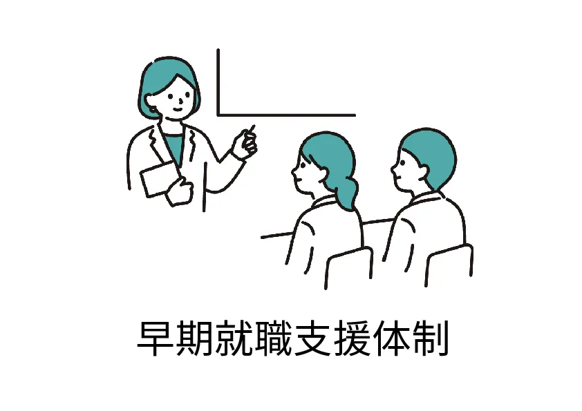

リカレントスクール広島校は
広島市中区に位置する職業訓練校です。
実務経験豊富な講師が在籍しており
最新の業界ニーズに対応できるスキルを受講生に提供します。
- ・Pythonも学ぶJavaプログラマー養成科
- ・これから始める！Web動画編集＆ホームページデザイン科
- ・初歩から学ぶグラフィック・Webデザイナー養成科
- ・初歩から始めるWebデザイナー養成科
- ・基礎から学ぶオフィスソフトWebデザイン養成科

詳しい支援内容はこちら
-
- STEP.01参加
- 創造社リカレントスクールの講座説明会・体験講座に参加
-
- STEP.02必要書類の準備
- ハローワーク窓口で申し込み手続きを行ってください
-
- STEP.03面接
- 創造社リカレントスクールにて就職する意思を確認します
-
- STEP.04入校
- 選考結果をお知らせし、選考に合格すると入校となります
| 郵便番号 | 〒 730-0015 |
|---|---|
| 住所 | 広島県広島市中区橋本町9-7ビル博丈3階 |
| 電話番号 | 082-221-7580 |
| 最寄駅 | ・広島駅「銀山町」電停より徒歩3分 ・各社路線バス「稲荷町」バス電停より徒歩1分 |